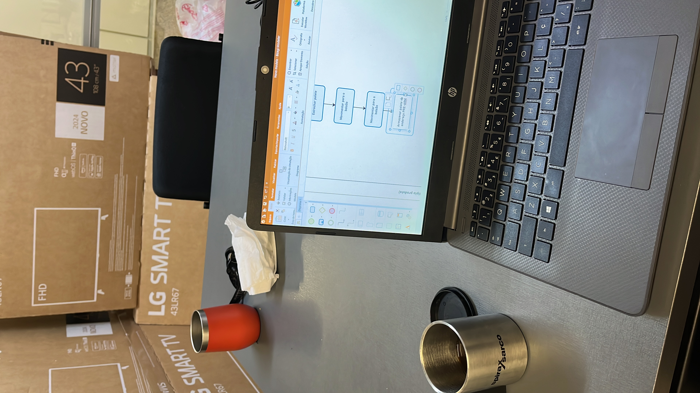
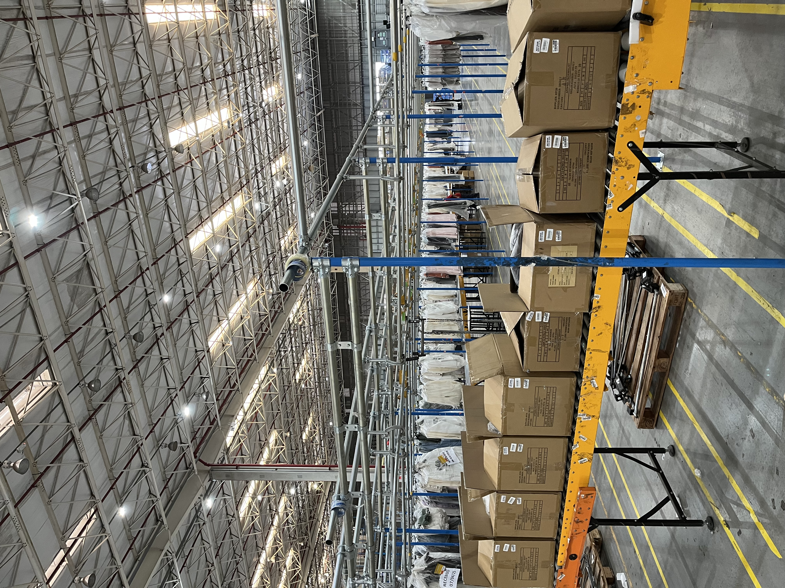
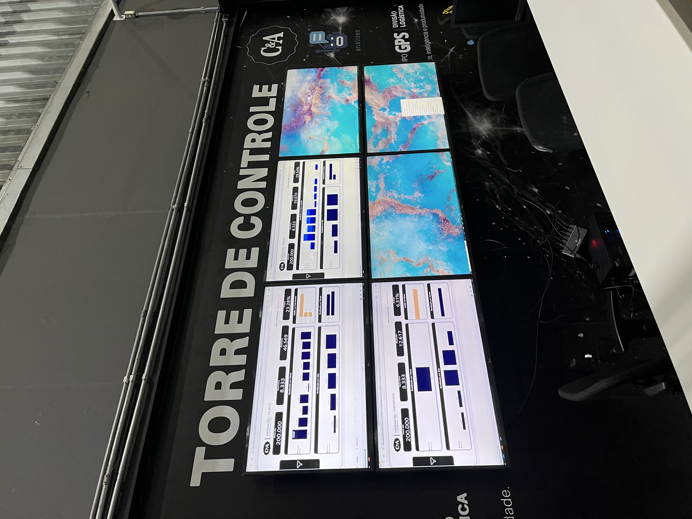
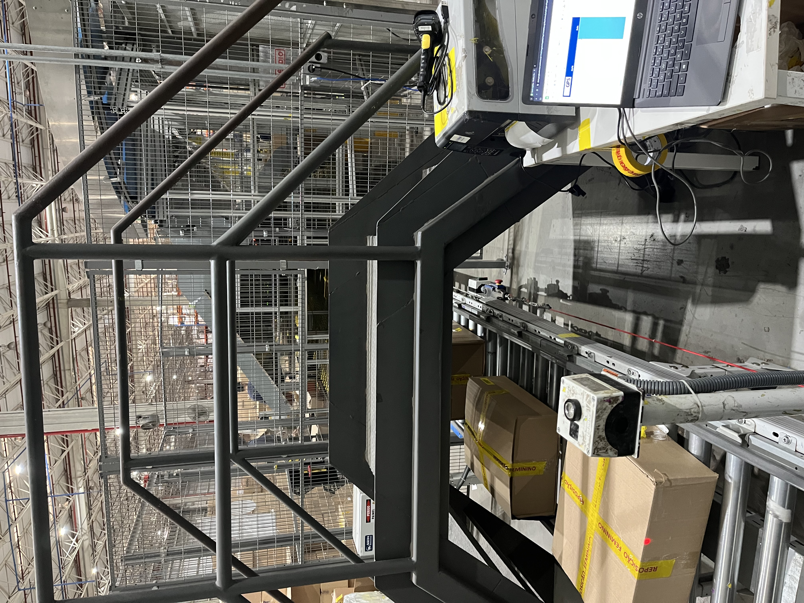

Sobre
Analista com experiência em logística e na área comercial do Grupo GPS, empresa especializada em serviços terceirizados. Como Analista Comercial, desenvolvi uma ferramenta de automação em Excel que reduziu em 80% o tempo de elaboração de propostas. Antes, como Analista de Projetos, trabalhei com mapeamento de processos (BPMN), Cronoanálise e indicadores para áreas técnicas e gestores.
Atualmente direciono essa base para a análise de dados, resolvendo problemas de negócio com SQL, Python e Power BI. Construí uma solução de dados completa respondendo os questionamentos de uma base de vendas de automóveis com consultas a um banco de dados PostgreSQL para extração dos dados e um dashboard interativo com Python para visualização e exploração dos principais indicadores de desempenho, que você pode conferir no portfólio.
Experiência
-
Analista Comercial
Excel • PowerPoint • Orçamentação- Desenvolvi uma ferramenta de automação orçamentária em Excel com preenchimento dinâmico, que centraliza a base de custos de mão de obra e equipamentos e distribui as informações para as demais frentes da proposta, reduzindo em 80% o tempo de elaboração de propostas comerciais.
- Criei uma solução em Excel que centraliza o status de todos os contratos da companhia, permitindo ao Diretor acompanhar a acuracidade dos contratos regularizados e atuar sobre pendências (sem cláusula de reajuste, sem assinatura ou com cliente inexistente).
- Elaborei minutas contratuais e apresentações comerciais em PowerPoint, traduzindo requisitos técnicos em documentos claros para clientes e parceiros.
- Alinhei as demandas comerciais com a equipe operacional para garantir a execução dos serviços conforme o proposto.
-
Analista de Projetos Júnior
BPMN • Cronoanálise • Excel- Mapeei e diagnostiquei processos operacionais da área de logística, identificando gargalos e oportunidades de aumento do rendimento operacional.
- Padronizei processos críticos com fluxogramas em BPMN e POPs (Procedimentos Operacionais Padrão), garantindo retenção de conhecimento e conformidade operacional.
- Conduzi estudos de Tempos e Movimentos (Cronoanálise) para definir KPIs de produtividade, otimizar postos de trabalho e dimensionar headcount.
- Consolidei indicadores em Excel, transformando dados brutos em informações para apoiar a tomada de decisão gerencial.
- Levantei requisitos com a equipe operacional, traduzindo necessidades em soluções técnicas.




Grupo GPS
Portfólio
-
Gestão de Contratos
Dashboard interativo projetado para explorar dados, cruzar informações estratégicas e extrair insights valiosos no próprio Excel.
Ver case -
Dashboard de Vendas de Automóveis
Projeto prático de análise de dados onde dados brutos armazenados em PostgreSQL foram transformados em um painel interativo dinâmico.
Ver case
Contato
Vamos conversar? Fique à vontade para entrar em contato.
- E-mail contatowildermiranda@gmail.com
- LinkedIn linkedin.com/in/wildermiranda
- GitHub github.com/wildermiranda